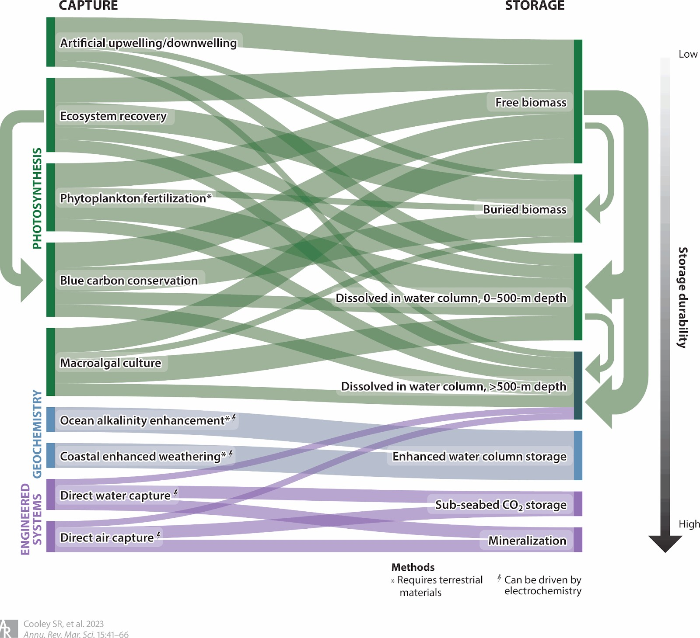

Climate-Change Solutions Review, Terra.do
Solution in focus: Conserve and restore existing wetland areas while enabling blue carbon adoption.
Why this matters: Wetlands are among the highest-density carbon stores per hectare on Earth (living biomass + deep, long-lived soil carbon). Protecting and restoring them prevents large CO₂ releases and provides immediate co-benefits to people. This is both a near-term and long-term, proven climate solution with clear social returns.
Mangroves, sea-grass meadows, and tidal marshes are essential for climate change adaptation along coasts globally, including (i) protection from storms and sea level rise, (ii) prevention of shoreline erosion, (iii) regulation of coastal water quality, (iv) provision of habitat for commercially important fisheries and endangered marine species, and (v) food security and coastal resilience for hundreds of millions of people.
The carbon that these coastal ecosystems capture is sometimes known as “blue carbon,” and there is a lot of it. The plants grow quickly and, because there is limited oxygen in the water-soaked soil, decomposition is slow. As a result, mangroves can store up to five times the carbon of a tropical forest.
Despite these ecosystem services to humans and other species, coastal wetlands are some of the most threatened ecosystems on Earth, with an estimated 340,000 to 980,000 hectares being destroyed each year. Up to 67% and at least 35% and 29% of the global coverage of mangroves, tidal marshes and seagrass meadows have been lost.
If these trends continue at current rates, a further 30–40% of tidal marshes and seagrasses and nearly all unprotected mangroves could be lost in the next 100 years. When degraded or lost, they become significant sources of greenhouse gases (CO2) and create scarcity in resources in the bio-region.
Wetland blue-carbon is NOT a substitute for fast fossil-fuel cuts (which is more needed to maintain global average temperatures under 1.5 or 2C), but it is still a high-value, high-co-benefit, nature-based climate solution, especially cost-effective in many countries compared to engineered removals as it provides climate resilience and economic value.

There is significant uncertainty and a lack of standardized, reliable methodologies for measuring and verifying blue carbon storage and permanence. Other challenges include difficulties in pricing projects, issues with leakage, financing gaps for project development, and a need for greater integration of benefit-sharing with all stakeholders.
Develop scientific protocols that combine field sampling, hydric soil cores, satellite/remote sensing and citizen science. Create and fund multi-year baseline and permanence bonds to underwrite reversal risk. This will reduce uncertainty and slowly make carbon finance more credible.
Evidence: Projects using standardized MRV and long monitoring windows are more likely to secure high-integrity crediting and public finance.The Blue Carbon Initiative.
Secure legal tenure or community stewardship agreements and structure benefits so locals capture revenue; such as marine planning, aquaculture enhancement, payments for ecosystem services, and jobs in restoration. Community-led management dramatically reduces illegal conversion and improves ecological outcomes.
Evidence: Community-run programs and local councils such as the Village Mangrove Councils in Tamil Nadu, India show higher survival and lower encroachment.
Use blended finance to lower entry costs, including grants for initial MRV and pilot restoration; and bring results-based blue carbon finance backed by data. Orgs should have verification processes and social equity safeguards, lowering investor risk and ultimately protecting people and ecosystems.
Evidence: The Carbon to Sea Initiative estimates that it may one day sequester carbon for as little as $25 per tonne.
The scale-up potential is simultaneously modest and powerful: while global blue carbon can’t replace deep decarbonization (it’s a few percent of emissions by 2030 under optimistic scenarios), wetland action buys us time by preventing large emissions from conversion and by delivering resilient coastal protection and livelihoods, a rare triple win if done right.
Huge thanks to the Terra.do Sea Turtles cohort and Anders Halverson for their constant insight and feedback during this work.